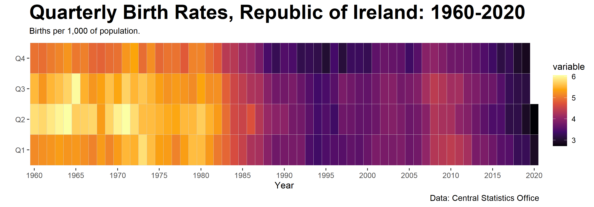
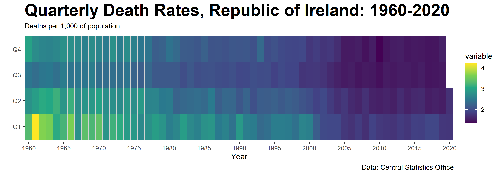
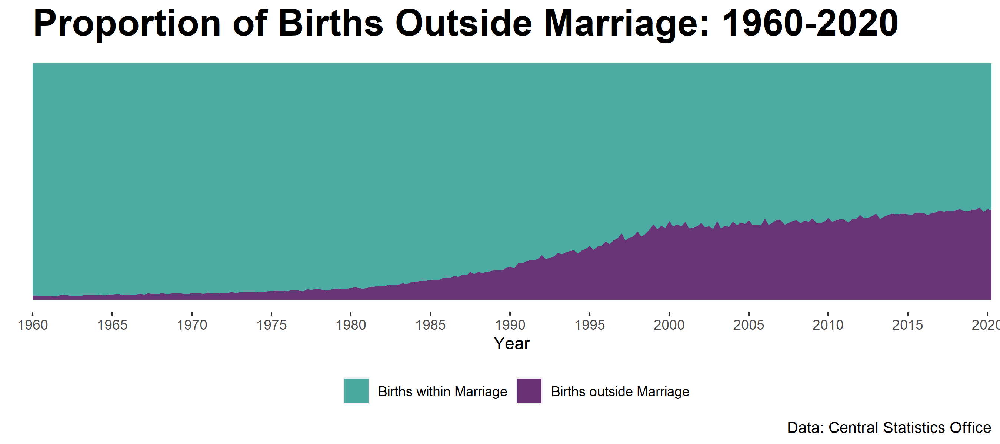
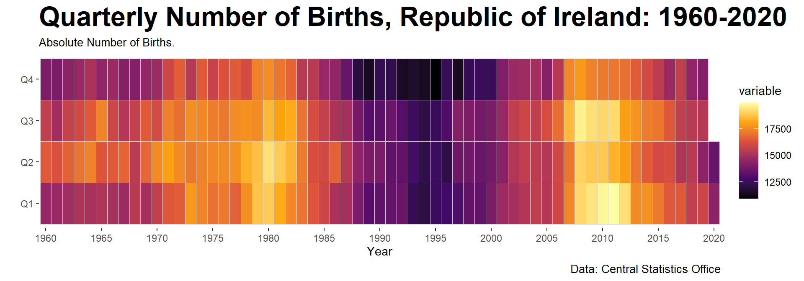
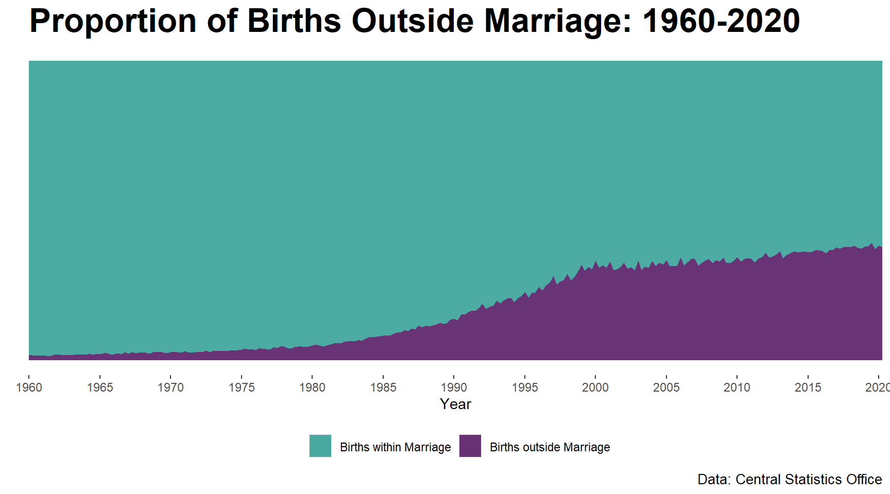

For this analysis, data on births, deaths and marriages was sourced from the Central Statistics Office (CSO). The CSO provides data on these metrics since 1960, on quarterly intervals.
There are a number a different ways for visualising time series data - the tile plot is a useful approach as it’s possible to not just visualise trends over time but to also track trends in seasonal data.
In the following plot, each year is plotted separately with the quarters stacked vertically:

The tile plot is a really useful way to visualise activity over time. Github use this plot format for visualising contributions: link
In addition to visualising the births over time, we can also plot the death rate, using the same format:

Finally, the CSO dataset breaks down the number of births to those that occurred outside of marriage and the births that related to a married couple. Traditionally, having a child outside of marriage was frowned upon, however in recent years this has become much more common as the societal-norms have become more liberal.
The data supports this trend; we can see that starting from a very low base this proportion grew relatively quickly during the 80’s and the 90’s before the growth rate declined in the 00’s. Overall the trend is increasing over time, with the rate of increase slowing in recent years.

So baby-boom or not ? Based on the plots, the overall trend is downwards - unlike the United States there has been no noticeable uplift in the birth rate since as 1960 such as the one that that was experienced in the United States following World War II.
R Code
The following code provides an overview of how the data was sourced from the CSO and plotted using ggplot2. The original idea for the plot came from the following post by Kieran Healy who produced similar plots for the United States and the United Kingdom: link.
The csodata R package provides a very useful interface between the CSO data and R. Further information on the package can be found here: link
# Importing Required libraries
library(csodata) # library to get data from the CSO
library(zoo) # used to get function to replace na values with next value
library(ggplot2)
library(tidyverse)
library(magrittr)
library(lubridate)The CSO dataset we are interested in is VSQ01. Further information on the dataset can be found here: link
data <- cso_get_data('VSQ01', cache=FALSE)
# Previewing the data
dim(data)## [1] 15 243The dataset is wide - the data is organised in columns as opposed to rows. In order to transform the data it’s necessary to transpose the data and extract the metrics we require for plotting.
# Reformatting the data for plotting
data.transpose <- t(data[c(1,4,7,10,13), ])
labels <- rownames(data.transpose)
data.transpose <- cbind(labels, data.transpose)
# Removing the first two rows as these contain label data
data.transpose <- data.transpose[-c(1:2),]Once the data is imported, it’s also necessary to augment the dataset to replace missing information. There is no datapoint for 2017-Q4.
There are a number of different approaches for inserting the missing dataset; given there is only one datapoint missing, the 2017-Q4 values are assumed to be equal to the 2017-Q3 values.
# Inserting 2017Q4 data
# For now, this is set equal to 2017Q2 data
q4_2017 <- as.list(data.transpose[data.transpose[,1]=='2017Q3',])
q4_2017$labels <- "2017Q4"
# merging data
data.transpose <- rbind(data.transpose, q4_2017)
rownames(data.transpose) <- NULLOnce the dataset is complete, we convert the data to a dataframe and rename the columns.
data_final <- as.data.frame(data.transpose)
names(data_final)[1] <- "period"
names(data_final)[2] <- "population"
names(data_final)[3] <- "births"
names(data_final)[4] <- "births_within_marriage"
names(data_final)[5] <- "births_outside_marriage"
names(data_final)[6] <- "deaths"
# Replacing the na values with the next value
data_final <- na.locf(data_final, na.rm=FALSE, fromLast = TRUE)Finally we augment the dataset with additional metrics including the birth rate per 1,000 and the death rate.
data_final$year <- str_sub(data_final$period, 1, 4)
data_final$quarter <- as.numeric(str_sub(data_final$period, 6)) * 3
data_final$date <- make_date(year=data_final$year, month=data_final$quarter-2, day=1)
# Converting selected columns from character to numeric
data_final %<>%
mutate_at(c('year', 'quarter', 'births',
'population', 'births_within_marriage',
'births_outside_marriage', 'deaths'), as.numeric)
# Calculating the birth rate per 1,000 of population
data_final$rate <- ( data_final$births / data_final$population ) * 1000
data_final$death_rate <- ( data_final$deaths / data_final$population ) * 1000
# Sorting our data:
data_final <- data_final[order(data_final$date),]Next we create a function for our tile plots. Normally it’s not necessary to create bespoke functions for plots, but given we will be creating variants of the same plot a function is useful to avoid having to repeat code unnecessarily.
## Tiled monthly plot function
tile_plot <- function(data, variable, title, subtitle, caption, viridis_color){
# Creating the baseplot
p <- ggplot(data,
aes(y = factor(quarter,
levels = c(3,6,9,12),
labels = c("Q1", "Q2", "Q3", "Q4"),
ordered = TRUE),
x = factor(year)))
# Adding the births data
p <- p + geom_tile(aes(fill = variable), color='lightgrey') + labs(x = "", y = "") +
scale_x_discrete(breaks = seq(1960, 2020, 5)) +
scale_fill_viridis_c(option = viridis_color)
# Adding the labels
p <- p + labs(x = "Year",
title = title,
subtitle = subtitle,
caption = caption)
# Cleaning up the theme and the formats
p <- p + theme(legend.position = "right",
legend.justification = "left",
plot.title = element_text(face = "bold", size = 24),
plot.caption = element_text(size = 10),
plot.subtitle = element_text(size = 10),
panel.background = element_blank())
return(p)
}The first plot is for the birth rates :
# Plotting the final plot
p <- tile_plot(data = data_final,
variable = data_final$rate,
viridis_color = "inferno",
title = "Quarterly Birth Rates, Republic of Ireland: 1960-2020",
subtitle = "Births per 1,000 of population.",
caption = "Data: Central Statistics Office"
)
#Saving the plot file as a png
ggsave("births001.png", p, width = 10, height = 3.5)
# Viewing the plot
pInteresting, we can see the impact of not using standardised rates - if the absolute number of births is plotted we can end up drawing very different conclusions on the trend in births over time.
# Plotting Births without standardisation
p <- tile_plot(data = data_final,
variable = data_final$births,
viridis_color = "inferno",
title = "Quarterly Number of Births, Republic of Ireland: 1960-2020",
subtitle = "Absolute Number of Births.",
caption = "Data: Central Statistics Office"
)
# Viewing the plot
p
In addition to viewing the births, we can also plot the deaths:
p <- tile_plot(data = data_final,
variable = data_final$death_rate,
viridis_color = "viridis",
title = "Quarterly Death Rates, Republic of Ireland: 1960-2020",
subtitle = "Deaths per 1,000 of population.",
caption = "Data: Central Statistics Office"
)
# Saving the plot file as a png
# ggsave("deaths001.png", p, width = 12, height = 4, units = "cm", dpi=1200)
ggsave("deaths001.png", width=10, height=3.5)
# Viewing the plot
pIn order to plot this data, we need to ‘melt’ the data in R. This is due the fact that ggplot is limited to plotting a single dataframe with a requirement for the reference data to be contained in a single column. The melt function reformats our data such that at every time period we have two entries; one representing births in marriage and the other for births outside of marriage.
# stacked bar plot
library(reshape2)
plot_data <- melt(data_final,
measure.vars=c("births_within_marriage",
"births_outside_marriage"),
id.vars=c("date"))
# Area plot
p <- ggplot(plot_data, aes(fill=variable, y=value, x=date)) +
geom_area(position="fill", stat="identity", alpha=0.8) +
scale_x_date(date_breaks = "5 year", date_labels = "%Y",
expand=c(0,0))
# Adding the labels
p <- p + labs(x = "Year",
y = "Proportion",
title = "Proportion of Births Outside Marriage, Republic of Ireland: 1960-2020",
caption = "Data: Central Statistics Office") +
scale_fill_manual(name = '',
labels = c('Births within Marriage',
'Births outside Marriage'),
values=c('#1F968BFF','#440154FF'))
# Cleaning up the theme
p <- p + theme(panel.background = element_blank(),
legend.position = 'bottom',
axis.text.y = element_blank(),
axis.ticks.y = element_blank())
# Saving the plot file as a png
ggsave("marriage001.png", p, width = 9, height = 4)
# Viewing the plot
p